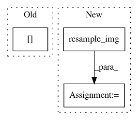

b28f80346270231ff2ef253af7ef4c5cd37f0916,plot_localizer_mass_univariate.py,,,#,26
Before Change
// Plot permutation p-values map
ax = grid[1]
p_ma = np.ma.masked_less(neg_log_pvals_unmasked, vmin)[..., 0]
ax.imshow(np.rot90(structural_data[..., picked_slice]),
interpolation="nearest", cmap=plt.cm.gray)
im = ax.imshow(np.rot90(p_ma[..., picked_slice]), interpolation="nearest",
cmap=plt.cm.autumn, vmin=vmin, vmax=vmax)
After Change
target_affine=structural_img.get_affine(),
target_shape=structural_img.shape,
interpolation="nearest")
neg_log_pvals_bonferroni_resampled = resample_img(
neg_log_pvals_bonferroni_unmasked,
target_affine=structural_img.get_affine(),
target_shape=structural_img.shape,
interpolation="nearest")
// Various plotting parameters
picked_slice = 110 // plotted slice
vmin = -np.log10(0.1) // 10% corrected
In pattern: SUPERPATTERN
Frequency: 3
Non-data size: 3
Instances
Project Name: nilearn/nilearn
Commit Name: b28f80346270231ff2ef253af7ef4c5cd37f0916
Time: 2014-03-31
Author: virgile.fritsch@gmail.com
File Name: plot_localizer_mass_univariate.py
Class Name:
Method Name:
Project Name: dPys/PyNets
Commit Name: 01d18e835815feedeac2fbeff8025cdd94128eaa
Time: 2019-12-09
Author: dpisner@utexas.edu
File Name: pynets/fmri/clustools.py
Class Name: NilParcellate
Method Name: create_clean_mask
Project Name: nilearn/nilearn
Commit Name: a88b0fdfdfab64f76eac3359406a87a1254d9252
Time: 2018-08-02
Author: gael.varoquaux@normalesup.org
File Name: nilearn/plotting/tests/test_html_stat_map.py
Class Name:
Method Name: test_view_stat_map